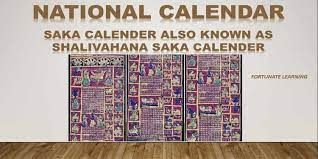

17 National Symbol Of India
| SR.NO | TITLE | NAME | SYMBOL | ABOUT |
| 1 | National Flag | Tringa | National Flag:- Tiranga is the national flag of India, it was designed by Pingali Venkayya and was adopted by the assembly on 22nd July 1947. Tiranga means tri-color. There are three colors in the national flag of India. Saffron symbolizes the sacrifice of the freedom fighters, white symbolizes peace and green symbolizes fertility and prosperity. | |
| 2 | National Emblem | Ashok Chakra | National Emblem:- The national emblem was adopted from the Ashok Chakra at Sarnath. The national emblem of India represents the motto ‘Satyameva Jayate’. | |
| 3 | National Currency | Indian Rupeestd> | National Currency:- Indian currency is Indian Rupees, also called INR. The Reserve bank of India monitors the circulation of Currency. Udayakumar Dharmalingam designed the Indian rupees. | |
| 4 | National Calendar | Saka Calendar |  | National Calendar:- Saka Calendar is the national calendar, it represents the history of the country and symbolizes the golden period of India. |
| 5 | Oath Of Allegiance | National Pledge |  | Oath Of Allegiance:- The national pledge of India is the Oath of allegiance. The national pledge maintains peace, unity, and brotherhood in the country. |
| 6 | National River | Ganga |  | National River:- In 2008, Ganga was declared the national river of India to achieve the goals of the Ganga Action Plan. |
| 7 | National Animal | Royal Bengal Tiger | National Animal:-Royal Bengal Tiger the national animal of India. It is an endangered animal therefore it was adopted as the national animal of India. | |
| 8 | National Bird | Indian Peacock | National Bird:- peacock is the national Bird of India. Peacock is one of the most beautiful and elegant birds. It was adopted as the national bird in the year 1963. | |
| 9 | National Tree | Indian Banyan Tree | National tree:- The banyan tree is the national tree of India. It is the core heritage of India. The Banyan tree is sacred in Hindu philosophy. | |
| 10 | National Song | Vande Mataram | National Song:- Vande Matram is the national song of India. It was written by Bankim Chandra Chatterjee. It was adopted by the assembly in 1950 | |
| 11 | National Anthem | Jana Gana Mana | National Anthem:- Jana Gana Mana is the National Anthem of India. It is composed by Rabindranath Tagore in Bengali and was translated to Hindi later on. It was adopted as the national anthem of India in the year 1950, on 24th January. | |
| 12 | National Heritage Animal | Indian Elephant | National Heritage Animal:- Indian Elephant is the national heritage animal of India. The elephants are on the verge of being extinct therefore the protective major was taken and the Indian Elephant was declared the national heritage animal. | |
| 13 | National Aquatic Animal | Dolphin | National Aquatic animal:- Ganges river dolphin is known as the national aquatic animal because in the past few years the number of dolphins has decreased. Therefore, to protect them it was declared the national aquatic animal. | |
| 14 | National Vegetable | Pumpkin | National Vegetable:- pumpkin is the national Vegetable of India. It is one of the few plants that grow throughout the country and with fewer resources. | |
| 15 | National Fruit | Mango |  | National fruit:- mango is the national fruit of India. Mango is loved by everyone and it is one of the most popular fruits in India. Generally, found during Summers. |
| 16 | National Flower | Lotus | National Flower:-Lotus (Nelumbo Nucifera Gaertn) is the National Flower of India. It is a sacred flower and occupies a unique position in the art and mythology of ancient India and has been an auspicious symbol of Indian culture since time immemorial. | |
| 17 | National Reptiles | King Cobra | National Reptile: King CobraKing Cobra or Snake eater (Ophiophagus hannah) is the National Reptile of India and is found in the forests of India and Southeast Asia. It is the world longest venomous snake which is capable of growing up to 19 ft and may live up to 25 years. They have an ability to inject 6 ml of venom in a single bite. It has its own cultural significance, in Hinduism King cobra is also known as Nagas and are considered as divine and worshiped Lord Shiva is often depicted with a cobra coiled around his neck |